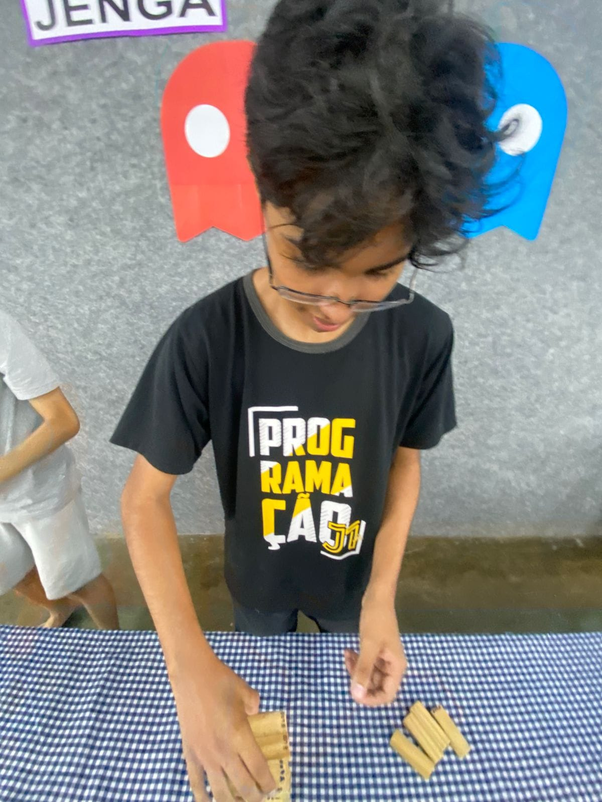
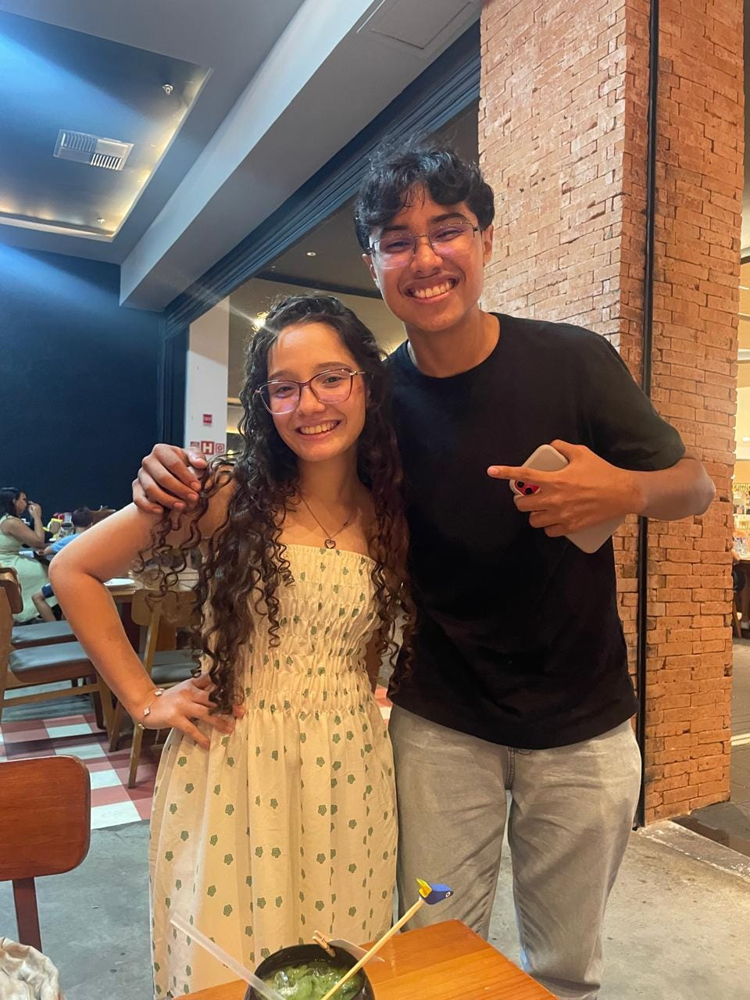
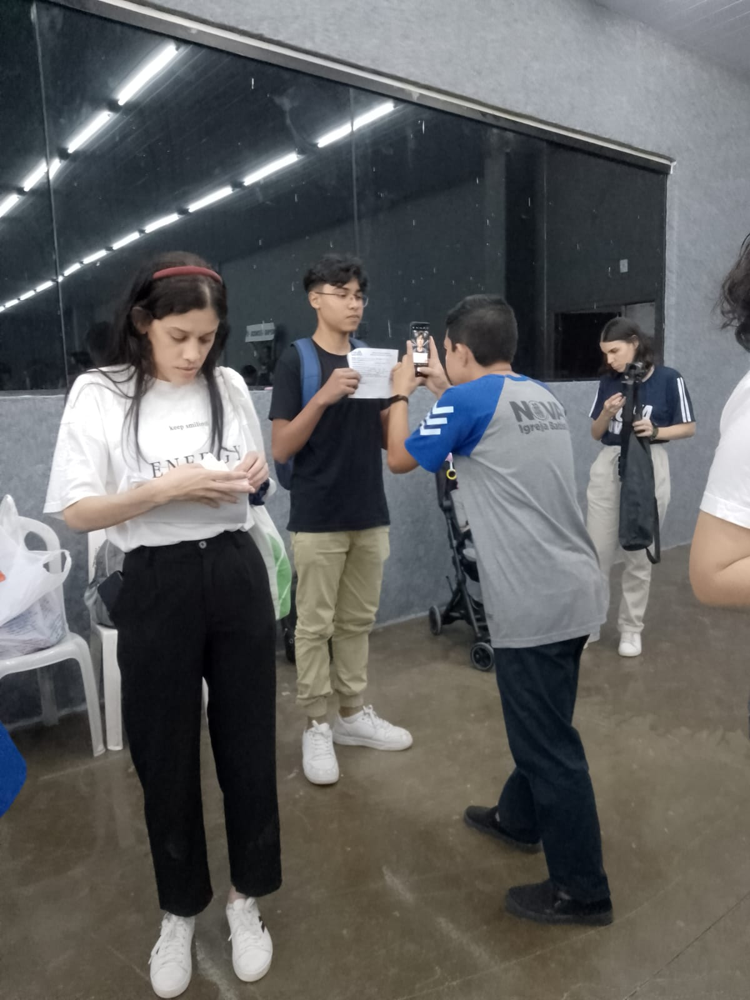
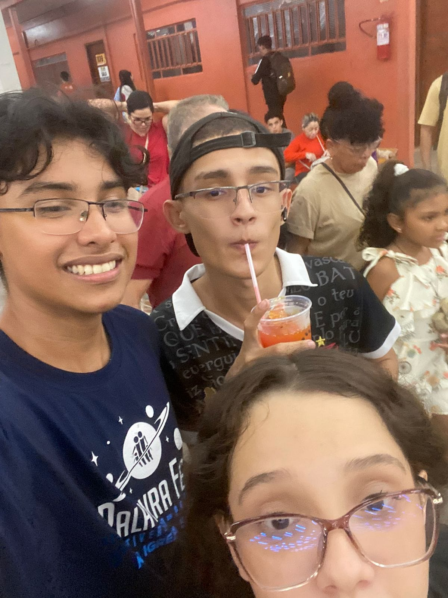

Serviço
Servo de Cristo
Que Deus abençoe muito sua vida meu amigo e que você seja sempre essa pessoa sempre serva e temente a Deus.
$ Cadu
Deus seja louvado pela vida meu amigo, que o Senhor lhe abençoe muito e que você continue sendo esse cara top demais.
Nova Fase
Que Deus abençoe muito sua vida meu amigo e que você seja sempre essa pessoa sempre serva e temente a Deus.
Que nesse novo de vida você continue mantendo essa fé em Deus que você tem e confiando nos planos de Deus em sua vida.
Que você continue sendo essa inspiração de alegria e temor a Deus que você é meu amigo.
galeria



